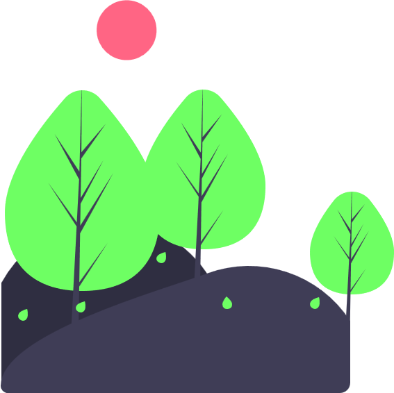
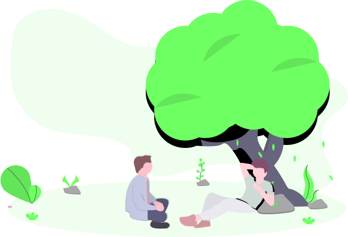
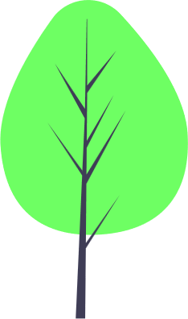
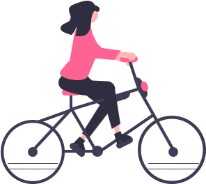
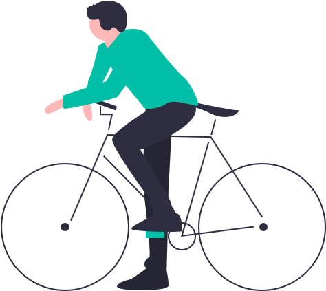

-
.把元素定位在盒子任一位置，甚至盒子外面
.最后定位在哪里，需要一个参考对象
position: static | relative | absolute | fixed | sticky;
- 相对定位 relative
-
.不脱离文档流，仍然占据原来位置
.层级提高，发生偏移时，如 top、left，可能会遮挡住后面标准流的元素
.参考对象：自己[自恋型] - 灵魂出窍
- 绝对定位 absolute
-
.脱离文档流 - 原地起飞
.隐式的转换为块元素 block
.参考对象：显式的设置了 定位 属性(相对或绝对都可以)的元素，一般是父元素。如果父元素没有指定定位属性，则一级一级往上寻找，直至 body
.通常显式的设置定位元素的偏移，可以使用数值或关键字 top、right、bottom、left 或负边距
.还可以使用 inset 定位元素；是 top、right、bottom、left 的简写，和 margin 和 padding
一样，依照"上右下左"的顺序指定；0为全覆盖
.层级提高，会遮挡其他元素
- 堆叠上下文 MDN
- z-index
-
.控制Z轴方向上盒子堆叠时的前后次序/渲染排序，通常也称层级
.只有显式使用 定位 属性的元素才有 z-index，标准文档流没有；但是后面的元素默认比前面的元素具有更高的层级
.如果没有显式指定 z-index，则为 auto，按照文档流中元素出现的顺序，后来居上
.z-index 大的元素，位于上层/近；z-index 小的元素位于下层/远；上层的元素会遮盖下层的元素
.z-index 为正的元素，出现在没有指定 z-index 的元素的上面
.z-index 为负的元素，出现在没有指定 z-index 的元素的下面
.导航等需要始终引导用户的元素一般采用较大的层级，保证始终位于页面顶部
-
相对定位很少单独使用，通常为子元素提供定位依据：父相子绝
绝对定位元素默认会待在原来的位置；实际开发中，有时候不用设置偏移也可以实现特定需求
- [] 利用不同的 z-index 营造 3D 氛围，更多细节，请参看 顶部 banner、视距差 - parallax
-





- [] 购物车 - 使用按钮和其中一个伪元素实现
-
. 伪元素：使用::before显示商品数量[从后台获取数据]
. 初始化：button取消边框、轮廓、背景
. 定位：父相子绝，使伪元素右上定位
. 还可以使用负边距实现
.cart::before {
content: '8';
position: absolute;
top: -10px;
right: -10px;
}
- [] 登录表单
- [] 渐变背景边框 - 见下例
-
. 定位 position
. 伪元素 ::before
. 背景图片 background-image
. 线路渐变 linear-gradient
. 圆角边框 border-radius
- [] 伪元素 - 绘制米琪；更多案例，请访问 头像设计
-
.前后伪元素分别作为米琪的左右耳朵，利用定位放置于米琪头部两侧
.mickey {
position: relative;
width: 100px;
height: 100px;
border-radius: 50%;
margin: 1rem auto;
background-color: #a8e073;
}
.mickey::after {
content: '';
position: absolute;
top: -1rem;
right: -1rem;
width: 40px;
height: 40px;
background-color: inherit;
border-radius: 50%;
}
.mickey::before {
content: '';
position: absolute;
top: -1rem;
left: -1rem;
width: 40px;
height: 40px;
background-color: inherit;
border-radius: 50%;
}
-
.嵌套 <ul> 使用
.开始隐藏2级菜单，:hover 时显示
.适合桌面端；移动端通常使用汉堡菜单
.注意：<a> 不能嵌套使用 <a>
<li class="menu-item">
<div>team</div>
<ul class="sub-menu">
<li>Lorem.</li>
<li>Culpa!</li>
<li>Culpa!</li>
<li>Eaque.</li>
</ul>
</li>
.menu {
height: 40px;
line-height: 40px;
background-color: #000;
color: #fff;
margin: 2rem auto;
}
.menu-item {
position: relative;
display: inline-block;
width: 80px;
text-align: center;
}
.sub-menu {
display: none;
position: absolute;
background-color: #333;
}
.menu-item:hover .sub-menu {
display: block;
}
- [] 层级提升 - 对前后元素的影响
-
层级未提升 - 默认情况下，后续元素的层级比前面的高
后续元素：设置了背景颜色[当前设置为白色]，会覆盖前面的阴影
.el-undone {
height: 40px;
line-height: 40px;
background-color: #f40;
box-shadow: 0px 10px 10px rgba(0, 0, 0, 0.4);
}
层级提升 - 通过指定目标元素为相对定位，并提升层级，使其位于后续元素的上层
当前元素：默认层级，不会覆盖
.el-done {
// MUST
position: relative;
height: 40px;
line-height: 40px;
background-color: #f40;
box-shadow: 0px 10px 10px rgba(0, 0, 0, 0.4);
// 不指定层级，默认在最上层
// z-index: 1;
}
- [] 使用 inset 定位元素
-
.inset {
position: relative;
width: 180px;
aspect-ratio: 16/9;
border: 1px solid var(--txt-warn-color);
margin: 1rem auto;
}
.inset::before {
content: '';
position: absolute;
inset: 20px 0;
background-color: var(--txt-warn-color);
}
- [] 元素居中